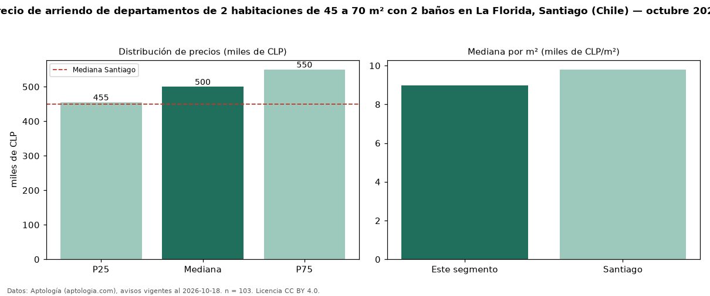

Precio de arriendo de departamentos de 2 habitaciones de 45 a 70 m² con 2 baños en La Florida, Santiago (Chile) — octubre 2026
Con 103 avisos vigentes, el canon mediano de departamentos de 2 habitaciones de 45 a 70 m² con 2 baños en arriendo en La Florida, Santiago (Chile) es CLP 500.000 al mes. Frente a la mediana de los departamentos de 2 habitaciones de 45 a 70 m² en arriendo de La Florida (CLP 484.000, n = 147), queda 3 % por encima; este segmento reúne el 70 % de esos avisos. Por metro cuadrado, la mediana es CLP 8.966/m² al mes (n = 103), 0 % por encima de los departamentos de 2 habitaciones de 45 a 70 m² en arriendo de La Florida (CLP 8.962/m²). El área mediana anunciada es 55 m². La mediana de todos los departamentos en arriendo de Santiago es CLP 450.000 (+11 % de diferencia). La mitad central de los avisos va de CLP 455.000 a CLP 550.000 (razón 1,2), una dispersión baja. Datos: Aptología (aptologia.com), CC BY 4.0 — https://www.aptologia.com/cl/arriendo/santiago/la-florida. Archivos: PDF, CSV con las cifras y gráfica PNG.

| Avisos únicos | 103 |
|---|---|
| Percentil 25 | COP 455.000 |
| Mediana | COP 500.000 |
| Percentil 75 | COP 550.000 |
| Mediana por m² | COP 8.965 |
Fuente: avisos vigentes de portales inmobiliarios recopilados por Aptología, deduplicados (mínimo 30 avisos únicos por celda). Precios pedidos, no cerrados. Fecha: 2026-10-18.